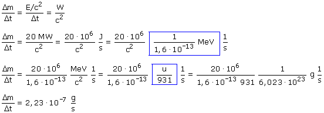

|
De acuerdo con la ecuación de Einstein la aparición de una energía E implica la desparición de una masa: Δm = E/c2 Rápidez de conversión de masa en energía significa masa que desaparece por unidad de tiempo:  Cada segundo deberán desaparecer 2.23·10-7 g de masa (¡Pasmoso!) |